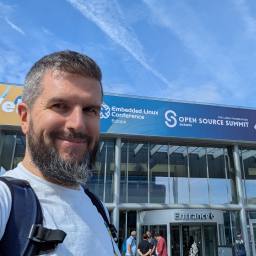
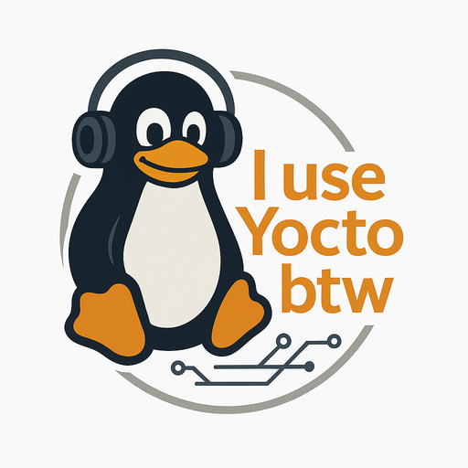

Francesco Castagnotto
Senior Embedded Linux Engineer
I bring Linux up on new hardware and keep it running in production: board bring-up, U-Boot, device trees, the kernel and Yocto-based BSPs.

- Experience
- 15 years of embedded Linux
- Education
- MSc Computer Engineering, Politecnico di Torino
- Industries
- Automotive, industrial, building automation
What I do
- Board bring-up
- First boot on new hardware: reading schematics and datasheets, getting a console up and the board booting from its boot media, and debugging peripherals on SoCs, SoMs and carrier boards such as i.MX6, i.MX8, i.MX9, OMAP and Sunxi.
- U-Boot
- Bootloader porting and configuration: board files, boot media and eMMC boot setup, environment and boot scripts, and the handoff to the kernel.
- Device tree
- Describing the hardware: pin muxing, clocks, buses and peripherals such as SPI and I2C devices or GPIO expanders, kept in step with the drivers that bind to them.
- Linux kernel
- Kernel configuration, drivers and patches: debugging peripherals, preparing changes that can go upstream, and following the kernel version a product is built on.
- BSP and Yocto OS
- Turning all of this into a reproducible image: layers and recipes, machine and distro configuration, systemd integration, CI builds and releases for production.
Skills
| Embedded Linux | Yocto Project / Poky, Linux kernel, device tree, U-Boot, BSP development |
|---|---|
| Hardware | ARM, ARMhf, ARM64; i.MX6, i.MX8, i.MX9; OMAP, Sunxi; SoC/SoM bring-up; schematics debugging |
| Languages | C, C++, Python, Bash, AWK |
| Tooling | Git, GitLab, GitHub, Docker, LXC, CI/CD, GDB, cross-compilation toolchains |
| System integration | systemd, SysVinit, middleware, production automation, RPM release management, remote debugging infrastructure |
| Automotive | IVI navigation systems, GENIVI (LXCBENCH) |
| Teamwork | Agile, Scrum, Jira, Confluence, cross-team technical leadership, engineering documentation |
Podcast

I use Yocto btw
The podcast for those who live (or survive) among Yocto, Embedded Linux, BSPs, and Open Source.
In Italian and English. On air since July 2025.
Blog
- BOINC: donate your idle computing to scienceSetting up BOINC on GNU/Linux to lend spare CPU cycles to research projects.
- i.MX93 boot from eMMCFuse settings, U-Boot configuration and production notes for eMMC boot with Yocto.
- Fixing the Endorfy wireless keyboard on GNU/LinuxTracking down and fixing an HID compatibility problem.
- GPIO expander MCP23S17 on embedded LinuxDevice tree, driver setup and usage examples for an SPI GPIO expander.
- Reinstall GRUB from a live CD or USBA recovery procedure that still works.
Master’s thesis
Politecnico di Torino, 2013
Linux Containers on ARM architectures
I measured how LXC behaves on single-core and multi-core ARM boards, cross-compiling Phoronix benchmarks for Freescale and Texas Instruments hardware. Each container ran on its own core, with the workload split evenly.
The work became the LXCBENCH project of the GENIVI Alliance, in collaboration with Mentor Graphics, and is cited in the Handbook of Research on Embedded Systems Design (IGI Global, 2014).
Contact
- Emailfcastagnotto@linux.com
- LinkedInin/fcastagnotto
- GitHubfcastagnotto
- Blogfcastagnotto.wordpress.com
- Podcastlinktr.ee/iuseyoctobtw
PGP fingerprint
6F54 2726 6BBE CB66 CB3B 2F99 9175 6401 5F96 79BB